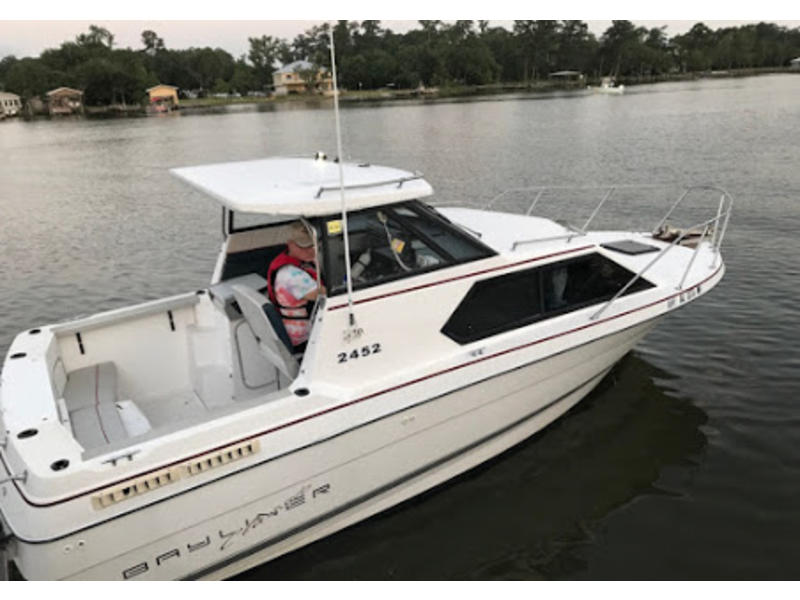

B-Atlas Boat Guide · BAYL-2452
Bayliner 2452 Ciera Express Hardtop Cruiser
1992–2003
The Bayliner 2452 Ciera Express is a compact hardtop cruiser built around a single sterndrive and a weather-protected helm. Its cabin combines a V-berth, convertible dinette, galley and enclosed head in a trailer-friendly beam, making it more practical for short coastal and inland trips than for extended liveaboard use.

- LOA
- 23.42 ft
- LWL
- 22 ft
- Beam
- 8.33 ft
- Draft
- 2.92 ft
- Hull behaviour
- Planing
- Fuel
- Gasoline
- Propulsion
- Sterndrive
- Engine configuration
- Single Inboard
- Boat family
- Express Cruiser
- Construction
- Fiberglass
Best for
- Weekend cruising in variable weather
- Buyers needing a compact hardtop cruiser
- Owners who value trailerability and simple marina requirements
Trade-offs
- Limited interior and storage volume
- Single sterndrive concentrates propulsion risk in one system
- Cockpit and side access are compact
- Older examples require careful inspection of sterndrive, transom and deck structure
Known concerns
- No model-specific concern has been promoted to B-Atlas’s evidence threshold. This does not mean the model has no age-, condition- or hull-specific risks.
Inspection focus
- Sterndrive, bellows, transom assembly and cooling system
- Moisture around deck fittings, windows and transom penetrations
- Fuel system, wiring and sanitation equipment
- Cabin leaks and hardtop/window sealing
Continue researching
Related boat models
Bayliner 2859 Ciera Express Hardtop Cruiser
27.75 ft · Planing
Bayliner 2855 Ciera Sunbridge Multi-Generation Sunbridge
28.08 ft · Planing
Bayliner 3058 Command Bridge Command Bridge Cruiser
31 ft · Planing
Bayliner 3055 Ciera Sunbridge / 305 SB Express Cruiser
31.5 ft · Planing
Bayliner 3258 Command Bridge Command Bridge Cruiser
32.92 ft · Planing
Bayliner 3270 / 3288 Motor Yacht Explorer / Motor Yacht
32.08 ft · Planing
About this record
B-Atlas preserves uncertainty: missing information remains unknown rather than being treated as a negative. Specifications and guidance describe the model record; individual boats can differ by year, equipment, refit and condition.